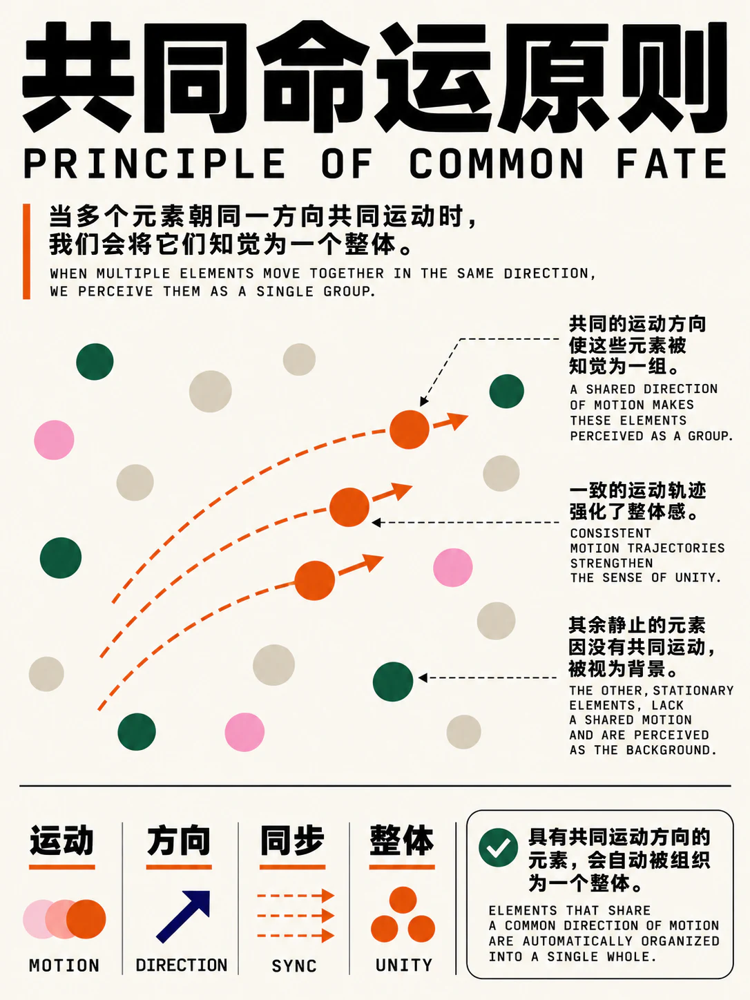

让毫不相干的模块一起动
顶部公告条、侧边弹窗和正文角标同时向左滑入，大脑会把它们强行捆成同一流程，用户反而找不到刚刚自己点的东西在哪。
PRINCIPLE OF COMMON FATE
当多个元素朝同一方向共同运动时，我们会将它们知觉为一个整体。
WHEN MULTIPLE ELEMENTS MOVE TOGETHER IN THE SAME DIRECTION, WE PERCEIVE THEM AS A SINGLE GROUP.
海报第一条写着「共同的运动方向使这些元素被知觉为一组」。现在 3 枚成员朝不同角度飞散，眼睛会把它们拆成互不相干的散点。
直接在画布上向右横拖把航向理顺到 15° 以内，或点击画布上的红警签一步齐向。
WHY SHARED MOTION BREAKS CAMOUFLAGE
121 号海报把共同命运原则拆成三句极凝练的话：
为什么眼睛对「一起动」如此敏感？在自然界里，一只停在树干上的蛾子或草丛里的动物可以靠斑纹、颜色和轮廓完美隐藏自己；但只要它迈开步子，身体上的几十块斑点就会在时间维度上共享同一个速度矢量——它们同步朝左、同步加速、同步停下。
视觉系统在千万年演化里把「同向同步变化」当成判断是否属于同一个物理实体的捷径。哪怕没有边框、没有同色，只要一起走，大脑就立刻把它们从背景里剥出来。
DIRECTION, VELOCITY & TEMPORAL SYNCHRONY
海报摘要说「当多个元素朝同一方向共同运动时，我们会将它们知觉为一个整体」。这句话点出了核心，但容易让人误以为只要方向一致就够了。
实际做交互动画和动态图形时，真正把元素焊成整体的有三个齿轮：方向一致、速度相近、起止同步。如果三张卡片都向右飞，但第一张飞得比第三张快两倍，或者先后错开半秒起跑，大脑会立刻把它们拆成三次孤立动作。
反过来，共同命运也不限于「直线平行」：绕同一圆心同步旋转的指针、朝同一中心同步缩拢的图标、或者在原地按同一节拍同步变亮的骨架屏（广义共同命运），只要共享一致的变化规律，同样能凝成整体。
注：界面设计中常给列表卡片加 30–50ms 的极短错峰（经验值），这能在不拆散整体归属的前提下带出一点轻盈节奏；一旦错峰超过约 150–200ms，队列感就会压倒整体感。
CONTRA-STRUCTURAL SHIFT VS. STATIC GROUPING
1923 年，格式塔学派创始人 Max Wertheimer 在提出共同命运时，设计了一个非常锋利的思想实验：先用静态线索把圆点分成明显的几组，然后故意挑出跨组的几个点让它们同时朝同一方向平移——他称之为「逆结构平移（contra-structural shift）」。
结果非常震撼：只要跨组元素开始齐步滑行，静态阶段占统治地位的分组立刻被改写；一旦滑行停止，分组又退回静态线索手中。这说明在视觉层级里，时间维度的共同运动往往比静态外观和空间距离更具优先权。
同一小类的静态组群原则各有专属页面，此处不展开重讲：外观归类见 115 相似性原则，距离归类见 116 邻近性原则，路径延续见 117 连续性原则，缺口补全见 118 闭合性原则，前景剥离见 119 图底关系原则，围栏框定见 120 共同区域原则。
REAL INTERFACES & IMPLIED MOTION ON PAPER
在屏幕界面里，共同命运直接驱动交互反馈；在不能动的印刷海报与信息图里，设计师则借由平行轨迹线、渐变残影、统一朝向箭把时间压缩成静态动势（配合 125 疏密对比原则 与 126 群组构图 控好聚散留白）。下面三个微场景可直接上手试。
勾选至少 2 条不相邻的任务，再点「同步归档」感受跨距同步成组。
点开第一条，盯住下面两条标题：它们作为一个整体平稳同步向下让位，眼睛立刻知道它们处于同一层级的下游列表。
平行弧轨 + 三连残影（121 原海报做法）：加入三条平行虚线弧轨和渐隐残影，静止的印刷画面立刻生出强烈的时间同步与编队整体感。
ORIGIN & LANDMARK EXPERIMENTS (1923–2012)
柏林格式塔学派创始人 Max Wertheimer 在德国期刊 Psychologische Forschung 第 4 卷发表《格式塔理论研究（二）》（Untersuchungen zur Lehre von der Gestalt. II，第 301–350 页），提出「共同命运因素（Faktor des gemeinsamen Schicksals）」，并用顺结构与逆结构平移实验揭示共同运动对静态分组的压倒效力。1938 年由 Willis D. Ellis 节译为英文收进 A Source Book of Gestalt Psychology。
瑞典心理学家 Gunnar Johansson 在 Perception & Psychophysics（第 14 卷第 2 期，第 201–211 页）发表经典论文：在暗室里只给行走演员的关节贴上光点。静止画面看不出任何人形，一旦开始迈步，各光点之间的共同前进矢量与相对约束瞬间让人认出走动的人影。
Allison B. Sekuler 与 Patrick J. Bennett 在 Psychological Science（第 12 卷第 6 期，第 437–444 页）证明：即便元素在空间中原地不动，只要沿同一方向同步变亮或同步变暗（共同亮度变化），视觉系统同样会把它们归为一组。
Johan Wagemans 与六位视觉科学家在 Psychological Bulletin（第 138 卷第 6 期，第 1172–1217 页）系统回顾百年格式塔研究，把共同命运、时间同步与现代视觉皮层运动处理机制衔接进统一框架。
WHEN NOT TO USE MOTION GROUPING
顶部公告条、侧边弹窗和正文角标同时向左滑入，大脑会把它们强行捆成同一流程，用户反而找不到刚刚自己点的东西在哪。
如果页面超过七成面积都在一起平移，画面会失去静止背景参照，视觉感官只剩镜头晃动，没有分组清晰度。
W3C WCAG 2.1 的 2.2.2（暂停、停止、隐藏）要求自动持续超过 5 秒的运动必须可暂停；2.3.3（交互触发动画）提醒大幅平移动画应尊重 prefers-reduced-motion，改用同步淡入或静轨暗示。
文字和财务表格需要稳定的视线落点，持续运动只会打断扫视。静态高频查阅界面优先用 120 共同区域原则、116 邻近性原则 或 122 简化构图原则。
CHECK YOUR EYE & ORIGINAL POSTER

具有共同运动方向的元素，会自动被组织为一个整体。
ELEMENTS THAT SHARE A COMMON DIRECTION OF MOTION ARE AUTOMATICALLY ORGANIZED INTO A SINGLE WHOLE.
本页的暖象牙纸面、朱橘弧线虚轨、粉橘三连残影、深墨松绿与深靛蓝体系，全部逐像素采自本页展示的 121 号原海报。